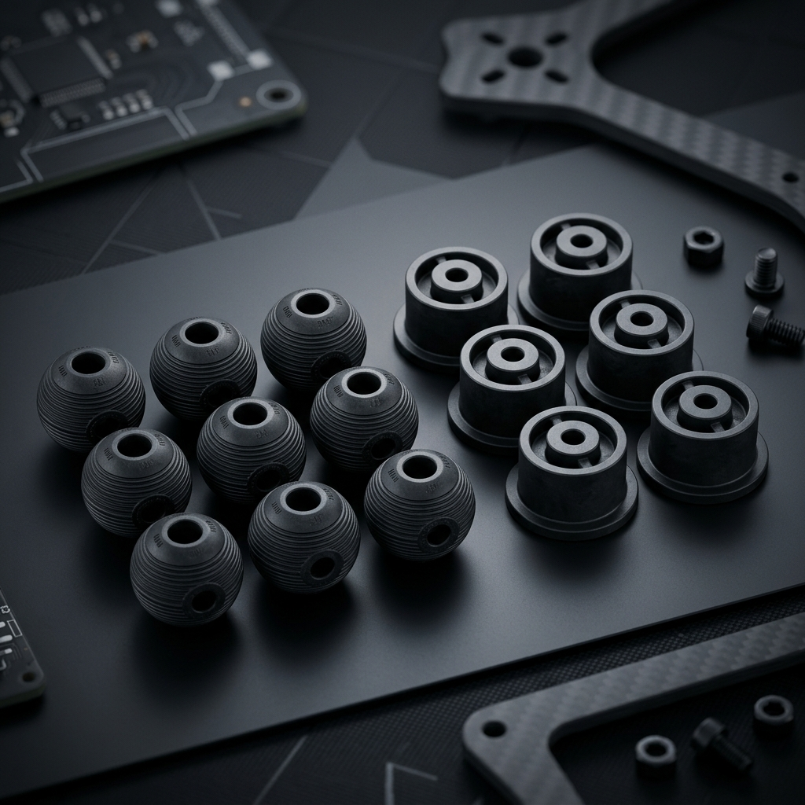

ドローンのハードウェア設計において、フライトコントローラ、カメラジンバル、およびモーターシステムは、高周波振動や雨風・塵埃に対して極めて敏感です。精密ゴム・シリコーン部品は、小型でありながらドローンの飛行安定性を維持し、浸水を防ぎ、着陸時の衝撃を緩和するための「見えない力学バリア」として機能します。以下にドローン開発の3大主要領域における部品設計ガイドラインを紹介します。
1. ジンバルカメラ防振ボールおよびモーター防振ガスケット（防振減衰設計）
プロペラやモーターが高速回転（50Hz〜200Hz）する際の高周波振動は、映像に「ブレ（コンニャク現象）」を引き起こします。
- ジンバル防振ボール：低硬度（Shore A 30°〜45°）かつ高減衰（tan δ）のシリコーンゴムを採用し、粘弾性特性により微細な振動を効果的に吸収します。カメラ重量に合わせた剛性バランスの計算が必須です。
- モーター防振ガスケット：ゴム金属焼付接着（Rubber-to-Metal Bonding）技術を推奨します。特殊ニトリルゴム（NBR）やフッ素ゴムをアルミ合金製のマウントと金型内で共有結合させることで、モーターからの高周波共振を完全に遮念し、ジャイロセンサーの信号歪みを防ぎます。

▲ 鈞翔精密がカスタム製造するドローン用高減衰防振ボールと金属接着モーターマウント
2. 電子機器室防水シールおよび可動部ジャバラカバー（極限環境耐候・気密）
産業用ドローンは、氷点下（-40°C以下）の高空飛行や激しい降雨など、全天候での稼働信頼性を確保する必要があります。
- 防水Oリング・シール：従来のゴム材料は低温で硬化・亀裂が生じやすいです。LSR（液状シリコーンゴム）射出成形によるシールガスケットは、優れた圧縮永久歪み率（< 10%）と極低温・高温耐性（-60°C〜250°C）を備え、IP67・高気密防水の確実な防塵防水を実現します。
- サーボジャバラカバー：VTOL（垂直離着陸）機の可動接合部には、肉厚わずか 0.3mm〜0.5mm の高引き裂き強度シリコーン製ジャバラカバーを使用し、サーボの回転応答性を妨げることなく水分やチリをブロックします。
3. 着陸装置緩衝パッドおよびバッテリー滑り止めシート（物理的衝撃保護）
- ランディングギアパッド：耐摩耗性と耐引き裂き性に優れたNBRまたはポリウレタン（PU）を採用し、着陸時の瞬間的な物理的衝撃を吸收してカーボンフレームの微細なクラックを防ぎます。
- バッテリー滑り止めパッド：耐候性に優れたEPDMを使用し、強い日差しや空力風圧の下でも摩擦力を維持して、バッテリーパックのズレを防ぎます。
ドローン用精密ゴム・シリコーン部品材料対照表：
| 部品名 | 推奨材料 | 硬度範囲（Shore A） | 重要な性能指標 |
|---|---|---|---|
| ジンバル防振ボール | 高引き裂きシリコーン / 天然ゴム | 30°〜45° | 高減衰係数、高反発性、耐引き裂き性 |
| 機器室防水ガスケット | LSR 液状シリコーンゴム | 50°〜65° | 低温弾性、低圧縮永久歪み（<10%） |
| モーター防振ベース | 耐油性 NBR ゴム | 60°〜70° | 金属接着強度 > 4.5 MPa（高耐久接合） |
| ランディング緩衝ガスケット | ポリウレタン (PU) / CRゴム | 70°〜80° | 超高耐摩耗性、高引き裂き強さ |
四、 鈞翔実業 — 航空宇宙グレードの信頼性を実現する代工パートナー
ドローン用防振部品やシールリングは、すべてオーダーメイド対応の精密カスタム部品です。鈞翔実業有限公司は、シリコーン・ゴム部品のOEM/ODM製造に30年以上の実績があり、台湾新北市新荘の自社工場に液状シリコーンゴム（LSR）射出成形システムおよび先進的な金属焼付接着ラインを備えています。耐寒・高引き裂きなどの特殊コンパウンド開発、高精度金型加工、試作から量産まで一貫したソリューション提供し、厳しい環境信頼性テストをクリアする最高品質の製品をお届けします。
五、 産業用ドローン（UAV）環境耐性・材料選定のポイント
高高度の低温環境、直射日光（紫外線）、降雨、農薬・潤滑油への曝露など、ドローンの運用環境は過酷です。部品の設置箇所に応じた代表的な材料選定基準は以下の通りです。
| 使用環境・要求特性 | 推奨材料 | 主な理由・設計上の利点 |
|---|---|---|
| 寒冷地・高高度での防振・気密 | シリコーンゴム（VMQ / LSR） | -50℃付近の低温でも硬化しにくく、優れた耐候性・耐オゾン性を発揮 |
| 燃料・潤滑油・農薬への接触部 | フロロシリコーン（FVMQ）/ FKM | シリコーンの低温弾性を維持しつつ、耐油性・耐薬品性を大幅に向上 |
| モーター・フレームとの一体防水 | LSR インサート成形（PA/PC/金属） | 組み立て工数を削減し、振動によるシールズレや水分の浸入を防止 |
六、 よくあるご質問（FAQ）
ドローンのジンバル防振ダンパーに最適なシリコーン硬度（Shore A）はどれくらいですか？
カメラの重量やモーターの振動周波数によって異なりますが、一般的には Shore A 30度〜50度の低〜中硬度シリコーンが選定されます。高周波の微振動を効果的に減衰し、寒冷地での飛行でも柔軟性を維持できます。
バッテリーケースの防水シールに固形シリコーンと液状シリコーン（LSR）のどちらを選ぶべきですか？
少量・試作や単純なリング形状であれば固形シリコーン（HCR）の圧縮成形が初期金型費用を抑えやすく、薄肉形状や樹脂・金属ケースとの一体成形（インサート成形）、大量生産では高精度なLSR射出成形が適しています。
農薬散布用や点検用ドローンのカスタムゴム部品を発注する際、どのような図面が必要ですか？
2D図面（PDF/DWG）または3Dデータ（STEP/IGES）に加え、使用環境の温度範囲、接触する薬液やオイルの有無、目標硬度（Shore A）、および年間予定数量をご共有いただければ、材料選定と金型設計のご提案が可能です。
2D/3D CAD図面による金型費用（NRE）・量産単価のお見積り
鈞翔実業有限公司は、自社金型設計からLSR液状シリコーン射出成形、HCR固形圧縮成形、異種材複合成形まで一貫対応いたします。RoHS・REACH・LFGB・FDA適合材料およびISO 3302-1寸法公差規格に準拠した試作・量産お見積りを承ります。